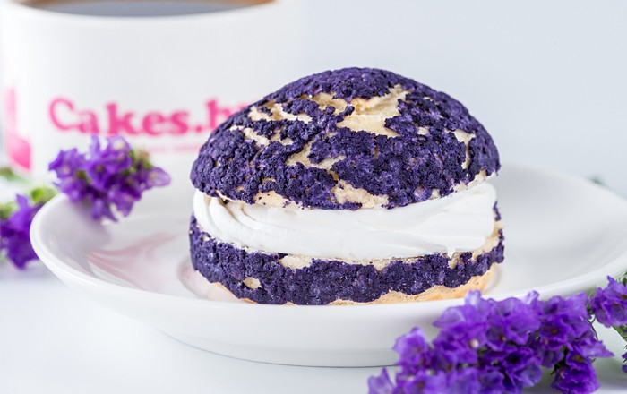
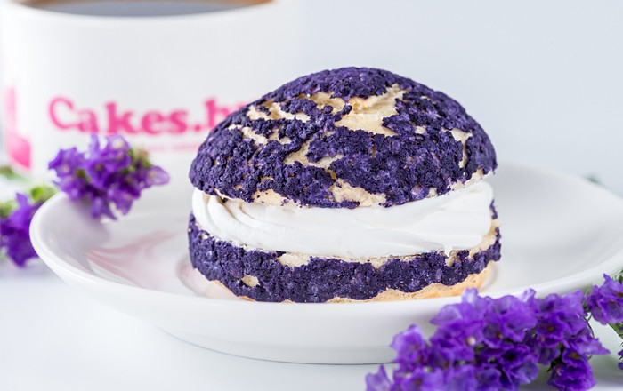

Карамельный капкейк с орехами
Сочный, насыщенный вкус карамельного крема, карамельного сливочного кекса.
Крем полит соленой карамелью и посыпан соленым арахисом и вафельной крошкой.
4 руб |
||||
Шоколадный капкейк
Наш капкейк с шоколадом внутри и шоколадной кремовой шапочкой снаружи. В наличии и на заказ.
Вес от 2 кг 5 руб |
||||
Кейкпопс Бургер
Маленькие вкусные пирожные в форме аппетитных гамбургеров подойдут для веселой вечеринки или подарка любителю фастфуда!
Цена за 1 штуку, заказ от 6 штук 5 руб |
||||
Шу с черничным конфи 

Заварное пирожное шу сверху покрыто тонкой корочкой песочного теста крокелин. Нежная начинка из сливок и сливочного сыра маскарпоне
и сердцевина из натурального черничного конфи.
Нежное, не приторное, изысканное французское пирожное.
Заказ от 6 шт, цена за 1 штуку. 6 руб |
||||
Тарт "Валентино"
Тонкая рассыпчатая тарталетка из миндального сабле (песочного теста) заполнена сливочным лаймовым кремом.
Сверху - взбитый до воздушности ганаш из бельгийского белого шоколада с натуральными сливками.
Каждый элемент выполнен вручную. Поверьте, это очень вкусно!
Заказ от 3 шт. 6 руб |
||||